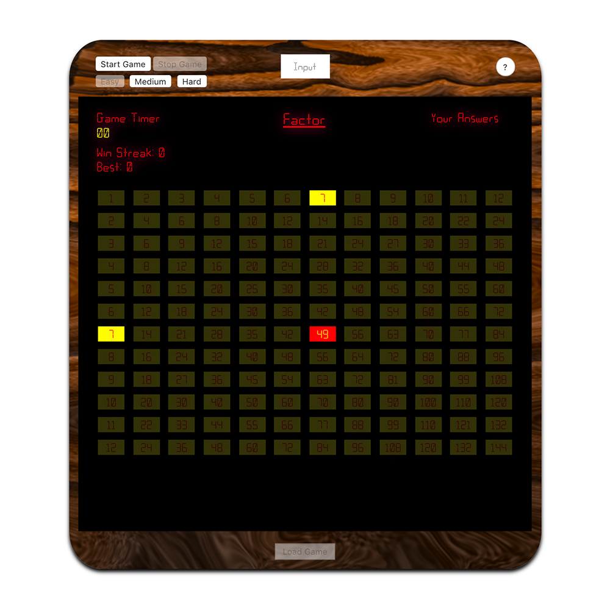

Since 2011 I've been working as a filmmaker and video editor.
It wasn't until I began working in a production environment, dealing with the intricacies
of telling visual stories on a granular level as an editor, that my curiosity for
programming was reignited.
In 2019 I've fully immersed myself in the land of Web Development and have found an exciting new trajectory.
My first HTML / CSS / Javascript project - the very best Multiplication Trainer

Since Janurary of 2019, Ive been teaching myself web development, starting with an 8-week
online course from SuperHi called "Foundation HTML, CSS & Javascript." Since the course I haven't stopped
learning, and have been steadily growing into an autonomous problem solver with a focus on functional programming
utilizing vanilla JavaScript.
As a former full-time video editor, I would spend the majority
of my day in front of a computer, molding a story using video and audio media.
What I enjoyed the most, was seeing the end product and knowing that I played a role in
curating the experience of the viewer. I believe these skills will not only
strengthen my capacity as a creator, but also satisfy my zeal for understanding patterns
and problem solving.
tefebell@gmail.com
(click email to copy)